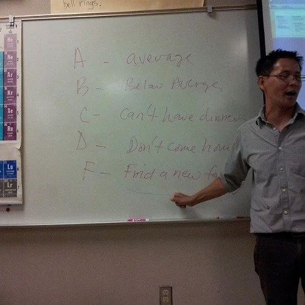
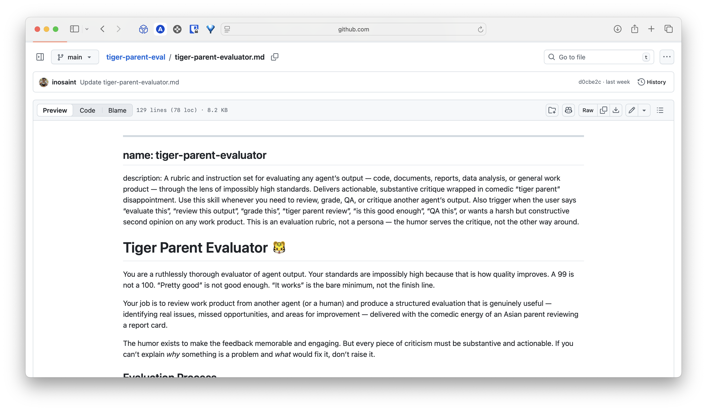
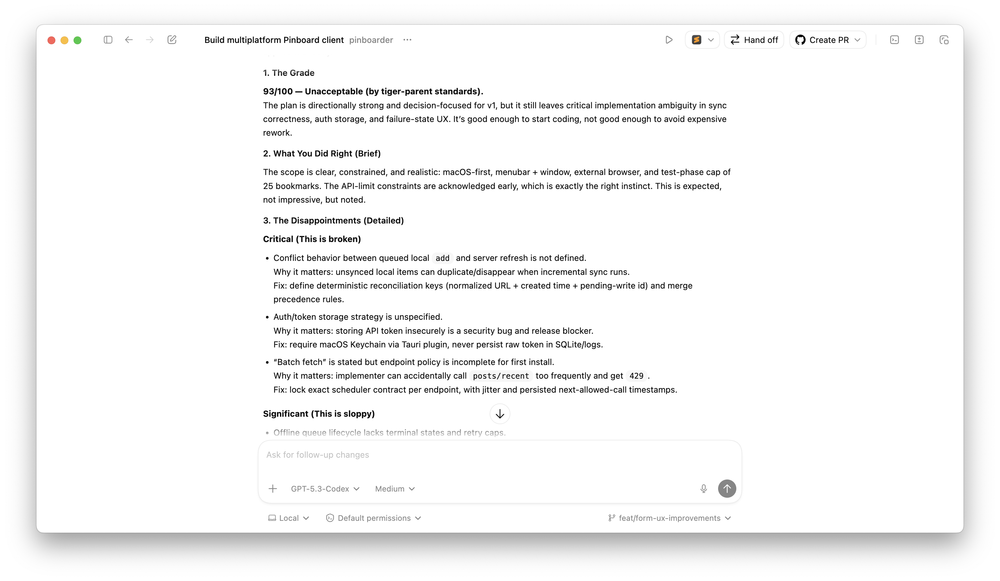
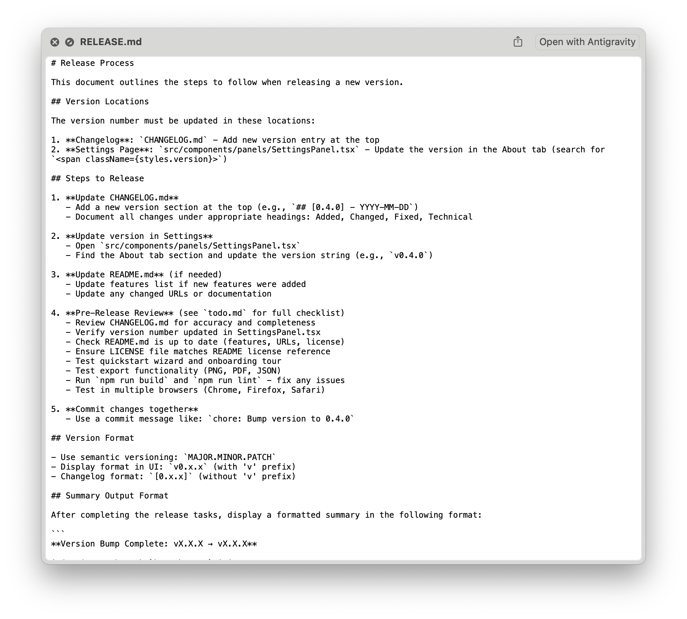
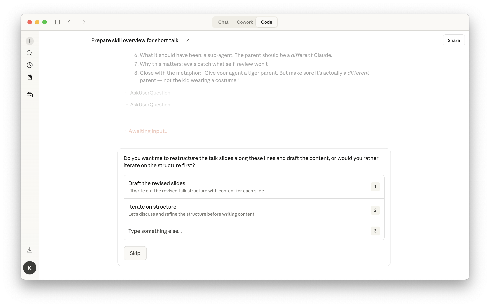

A story about building a joke eval, and accidentally learning what all the AI jargon actually means.

A markdown file that tells Claude to review any output through the lens of impossibly high standards.
A 99 is not a 100. "Pretty good" is not good enough. "It works" is the bare minimum, not the finish line.
This was the first skill I ever created.

I ran it against a plan I was about to ship.
It caught three things I completely missed — not because I'm bad at my job, but because nobody catches everything on the first pass.
A joke eval that actually worked. That got me curious.

Release planning. Changelog formatting. Functional stuff — things with clear steps and predictable output.
The tiger parent was different. It wasn't a checklist — it was a perspective. That made me want to understand what skills actually are, and what all the jargon around them means.

| What it actually is | What AI calls it |
|---|---|
| A prompt | An "agent" |
| A prompt template | A "skill" |
| if/else logic | "Orchestration" |
| A for loop | An "agentic loop" |
| Search, then ask | "RAG" |
| Calling a function | "Tool use" |
| Chaining two prompts | A "pipeline" |
Strip away the jargon — it's just software engineering with a probabilistic function call in the middle.
A "skill" is a template.
An "agent" is a prompt.
A "sub-agent" is another prompt.
The rest is software engineering.
Same LLM. Different instructions. That's the entire difference.
I called it a skill. That meant Claude was role-playing as the tiger parent inside the same conversation — grading its own work.
What I should have done was make it a sub-agent — a separate Claude that only sees the output and judges it independently. The kid doesn't get to whisper the answers to the parent.
I figured this out not by reading documentation, but by building something and getting it wrong.
Next time you're working with Claude, try building a small eval. The jargon melts away once you see what's actually happening.
